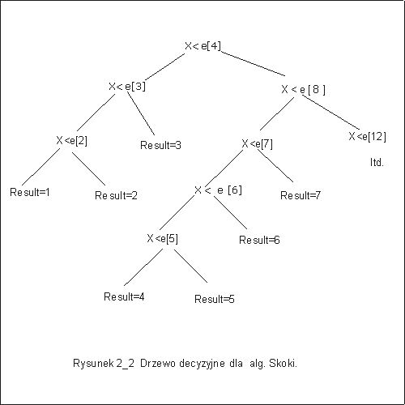

| « poprzedni punkt | nastêpny punkt » |
Algorytm binarnych poszukiwañ wykonuje zadanie wyszukiwania w ci±gu uporz±dkowanym najlepiej z przedstawionych do tej pory algorytmów. Zastanówmy siê, czy jest mo¿liwe dalsze poprawienie kosztu.
Rozwa¿my klasê wszystkich algorytmów, które rozwi±zuj± problem wyszukiwania w ci±gu uporz±dkowanym przez porównywanie elementów. Dla ustalenia uwagi, niech ka¿dy algorytm w rozwa¿anej klasie, bêdzie ca³kowicie poprawny ze wzglêdu na specyfikacjê:
wp = {n > 1, e[1]< e[2]< ... < e[n], e[1] £ x < e[n]}, wk = { result £ n, e[result] £ x £ e[result+1]}.
Drzewem decyzyjnym dla danego algorytmu wyszukiwania nazywaæ bêdziemy drzewo
binarne, którego wierzcho³ki wewnêtrzne s± etykietowane parami porównywanych
elementów, li¶cie zawieraj± warto¶ci zmiennej result. Ka¿dy wierzcho³ek
wewnêtrzny ma dwa nastêpniki odpowiadaj±ce akcjom, które trzeba wykonaæ, gdy
porównanie w tym wierzcho³ku da³o odpowied¼ tak i gdy da³o odpowied¼ nie.
Ka¿da ¶cie¿ka odpowiada wiêc ci±gowi porównañ wykonanych przez algorytm
dla konkretnych danych. Warto¶æ znajduj±ca siê w li¶ciu (na tej ¶cie¿ce) jest
uzyskanym wynikiem algorytmu. Oznaczmy przez D(Alg,n) drzewo decyzyjne dla
algorytmu Alg i danych o rozmiarze n.
Przyk³ad 5.1
Niech rozwa¿anym algorytmem bêdzie algorytm poszukiwañ sekwencyjnych Search. Wtedy drzewo decyzyjne dla dowolnego ci±gu e[1], e[2], e[3], e[4], zosta³o przedstawione na rysunku 2_1.
Niech rozwa¿anym algorytmem bêdzie algorytm Skoki. Drzewo decyzyjne dla danych e[1], e[2],...,e[16] zosta³o przedstawione na rysunku 2_2.

Pytanie 5: Ile maksymalnie pytañ TAK/NIE trzeba zadaæ, aby odgadn±æ dowoln± liczbê z przedzia³u [0,106]?
NA mocy za³o¿enia wszystkie algorytmy rozwa¿anej klasy zawsze daj± poprawne wyniki, zatem wszystkie mo¿liwe wyniki musz± siê znale¼æ jako etykiety li¶ci w ka¿dym z drzew decyzyjnych odpowiadaj±cych konkretnemu algorytmowi. Dla danych rozmiaru n, zmienna result, zgodnie ze specyfikacj± przyjmowaæ mo¿e tylko n-1 ró¿nych warto¶ci. Zatem liczba li¶ci dowolnego drzewa decyzyjnego D(Alg,n) musi byæ co najmniej równa n-1. Oczywi¶cie, liczba li¶ci mo¿e byæ du¿o wiêksza ni¿ n-1. Algorytm mo¿e wykonywaæ niepotrzebne porównania i wielokrotnie dochodziæ do tego samego wyniku.
Liczba wykonanych porównañ w konkretnym obliczeniu jest równa d³ugo¶ci ¶cie¿ki od korzenia do li¶cia, zatem policzmy jak d³ugie musz± byæ ¶cie¿ki. Zanotujmy najpierw prosty fakt dotycz±cy drzew binarnych.
Lemat 5.1
Je¿eli l jest liczb± li¶ci w drzewie binarnym, a h jego wysoko¶ci±, to l £ 2 h.
Dowód lematu 5.1 mo¿na przeprowadziæ przez proste rozumowanie indukcyjne ze wzglêdu na h.
Wróæmy do problemu d³ugo¶ci ¶cie¿ek w drzewie decyzyjnym. Gdyby w jakim¶ drzewie decyzyjnym D(Alg,n) wszystkie ¶cie¿ki mia³y d³ugo¶æ mniejsz± ni¿ lg(n-1), to wysoko¶æ tego drzewa by³aby mniejsza ni¿ lg(n-1). Wtedy, na mocy lematu 5.1, liczba li¶ci w tym drzewie by³aby mniejsza ni¿ 2 lg(n-1), czyli mniejsza od (n-1). Zmienna result w algorytmie Alg nie przyjmowa³aby jednej z mo¿liwych warto¶ci. To jednak jest niemo¿liwe, bo za³o¿yli¶my, ¿e wszystkie algorytmy rozwa¿anej klasy zawsze daj± poprawne wyniki. Wynika st±d, ¿e w ka¿dym drzewie decyzyjnym musi istnieæ jaka¶ ¶cie¿ka o d³ugo¶ci co najmniej lg(n-1). Oznacza to, ¿e w przypadku najgorszym liczba wykonanych porównañ musi byæ co najmniej równa lg(n-1). Poniewa¿ musi to byæ liczba ca³kowita, zatem liczba wykonanych porównañ w przypadku pesymistycznym wynosi co najmniej élg(n-1)ù.
Uzyskany wynik mówi, ¿e dla dowolnego algorytmu rozwi±zuj±cego problem wyszukiwania przez porównywanie elementów, zawsze znajd± siê takie dane, dla których algorytm wykona co najmniej Q(lg n) porównañ.
Poniewa¿ algorytm BinSearch wykonuje w najgorszym przypadku élg nù porównañ, zatem:
Lemat 5.2
Algorytm binarnych poszukiwañ BinSearch jest optymalnym, ze wzglêdu na pesymistyczny koszt czasowy, rozwi±zaniem problemu wyszukiwania elementu w danym ci±gu uporz±dkowanym.
Pytanie 6: Który z algorytmów wyszukiwania w ci±gu uporz±dkowanym zosta³ zastosowany, je¿eli wykonano kolejno porównania z elementami ci±gu o nastêpuj±cych indeksach 64, 95, 111, 103, 99, 97, 96? Ile elementów mia³ ten ci±g? .
| « poprzedni punkt | nastêpny punkt » |